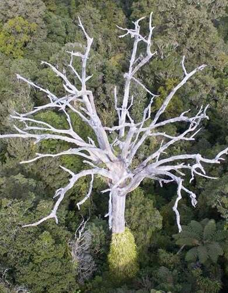
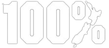

Issues
There are many problems that these species have to face, and though we have dealt with some of them
already, such as introduced predators or general polution (for the most part), we still must deal
with the other issues that are still present, such as Kauri Dieback (see right) or more specific
forms of polution, such oil spills or parasites.
|

×
|
 |